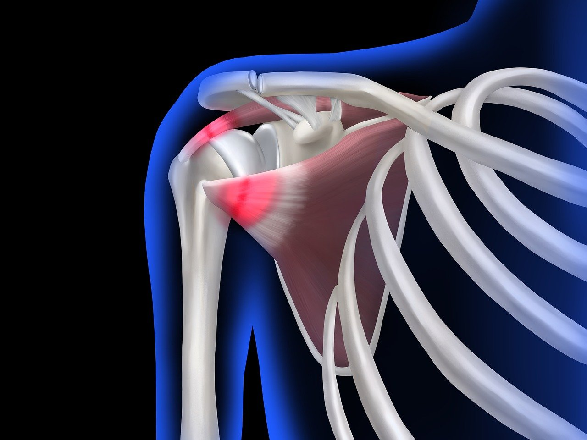

💪 Dor no Ombro e Lesão do Manguito Rotador
Você sente dor no ombro ao levantar o braço, vestir uma roupa ou carregar peso?
Esse sintoma pode estar relacionado a diferentes problemas, mas um dos mais comuns é a **lesão do manguito rotador**.
👉 Entender as causas e procurar tratamento cedo faz toda a diferença para evitar limitações no movimento.
🔎 O que é o Manguito Rotador?
O manguito rotador é um conjunto de quatro tendões e músculos que envolvem a articulação do ombro, garantindo estabilidade e permitindo movimentos como levantar e rodar o braço.
Quando esses tendões sofrem desgaste ou ruptura, aparece a dor característica, muitas vezes acompanhada de perda de força.
⚠️ Sintomas Mais Comuns da Lesão
- Dor no ombro, principalmente ao levantar o braço acima da cabeça
- Dificuldade para vestir roupas ou pentear o cabelo
- Perda de força ao carregar objetos
- Dor noturna, que atrapalha o sono
- Estalos ou sensação de “travamento” no ombro
📍 Principais Causas da Dor no Ombro
- Esforço repetitivo (movimentos repetidos no trabalho ou esporte)
- Traumas (quedas ou pancadas)
- Desgaste natural da idade, enfraquecendo os tendões
- Movimentos bruscos sem preparo muscular
🩺 Como é feito o Diagnóstico?
O diagnóstico é realizado pelo ortopedista através de:
- ✅ Exame clínico (testes específicos no consultório)
- ✅ Exames de imagem, como ultrassonografia ou ressonância magnética, que confirmam a lesão e avaliam sua gravidade
💡 Opções de Tratamento
O tratamento depende do tipo e da extensão da lesão:
Casos leves a moderados:
- ✅ Fisioterapia para fortalecer os músculos do ombro
- ✅ Medicamentos para aliviar a dor e inflamação
- ✅ Infiltrações em alguns casos específicos
Casos graves (ruptura extensa):
- ✅ Cirurgia para reparo dos tendões do manguito rotador
⏳ Quando Procurar Ajuda?
Se você sente dor frequente, perda de força ou dificuldade para levantar o braço, é hora de procurar um ortopedista.
O tratamento precoce evita que a lesão piore e garante melhores resultados.
✅ Retome os Movimentos sem Dor
Viver com dor no ombro não é normal. Com avaliação correta e tratamento adequado, é possível voltar a ter liberdade de movimento e qualidade de vida.
📲 Agende agora sua consulta e cuide da saúde do seu ombro.
Quero Agendar Minha Consulta